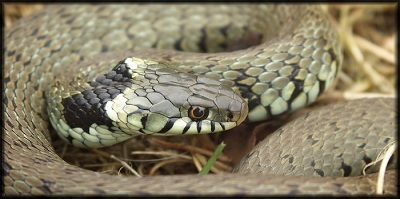
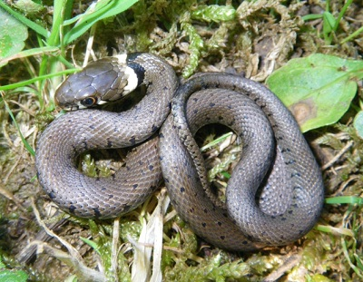
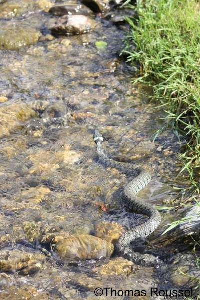
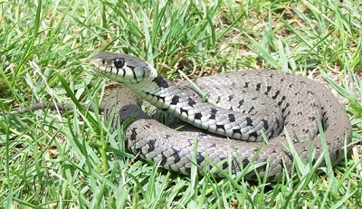
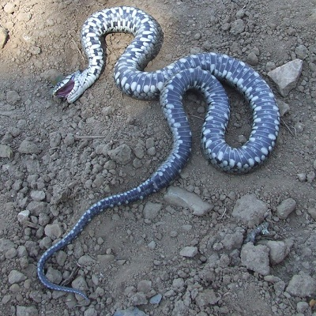

Couleuvre à collier
Morphologie: Les mâles mesurent généralement autour d'1m10 tandis que les femelles peuvent mesurer 1m60, et exceptionnellement 2m.La couleuvre à collier est souvent dans les nuances du gris mais on peut la rencontrer dans certains biotopes, avec une robe verte-olive, ou encore marron-gris. Elle possède des taches noires sur le dos en forme de barre verticale et possède autour de la tête un anneau jaune-blanc , très marqué au plus jeune âge et s'effaçant avec le temps. Un vieux spécimen peut par exemple ne posséder aucune trace de collier blanc. Enfin, elle possède un queue longue, épaisse s'affinant petit à petit.  Habitat: C'est la couleuvre la plus fréquente, elle est présente dans toute la France. Elle est semi-aquatique, c'est à dire qu'elle vit à proximité de l'eau, pouvant nager, et plonger dans celle-ci. Etant jeune, la couleuvre à collier fréquente les mares, étangs, rivières et lacs, à la recherche de nourriture. Cependant, il se peut que les sujets adultes quittent ce biotope pour vivre complètement à l'écart de points d'eau. Cela explique sa présence presque partout en France. De plus elle peut vivre de 0 à 2000 mètres d'altitude.Ovipare, La couleuvre à collier s'accouple une fois au printemps, fin avril ou courant mai, et une deuxième fois à l'automne. Les couleuvres à collier peuvent se rejoindre pour pondre, courant juin. Chacune peut pondre de 10 à 30 oeufs, qui écloront début septembre. Les petits mesurent alors une quinzaine de centimètres et sont très vulnérables. La couleuvre à collier passe l'hiver dans des galeries ou des abris naturels de fin octobre à début mars . Souvent plusieurs couleuvres, jeunes et âgées, hivernent ensembles.  Particularités: Elle chasse le jour, souvent dans l'eau. Aux heures de grandes chaleurs, elle peut se reposer pour se réchauffer au soleil, ou attendre calmement dans l'eau fraîche.Pour se défendre, elle donne des coups de tête et envoie un liquide nauséabond. Elle peut aussi se servir de ce dernier en faisant la morte (photo ci-dessous), le prédateur va alors croire alors que le serpent est mort depuis quelques jours et va partir en le laissant. Elle nage avec aisance, la tête hors de l'eau. Elle plonge et peut rester une quinzaine de minutes dans l'eau.
 Comportement: Ovipare, La couleuvre à collier s'accouple une fois au printemps, fin avril ou courant mai, et une deuxième fois à l'automne. Les couleuvres à collier peuvent se rejoindre pour pondre, courant juin. Chacune peut pondre de 10 à 30 oeufs, qui écloront début septembre. Les petits mesurent alors une quinzaine de centimètres et sont très vulnérables. La couleuvre à collier passe l'hiver dans des galeries ou des abris naturels de fin octobre à début mars . Souvent plusieurs couleuvres, jeunes et âgées, hivernent ensembles.  Particularités: Elle chasse le jour, souvent dans l'eau. Aux heures de grandes chaleurs, elle peut se reposer pour se réchauffer au soleil, ou attendre calmement dans l'eau fraîche. Pour se défendre, elle donne des coups de tête et envoie un liquide nauséabond. Elle peut aussi se servir de ce dernier en faisant la morte (photo ci-dessous), le prédateur va alors croire alors que le serpent est mort depuis quelques jours et va partir en le laissant. Elle nage avec aisance, la tête hors de l'eau. Elle plonge et peut rester une quinzaine de minutes dans l'eau.  Alimentation: La couleuvre à collier mange des amphibiens (grenouilles, crapauds, tritons.) ainsi que leurs larves, et aussi de petits poissons si elle chasse dans l'eau. Elle peut aussi manger des rongeurs, lézards.